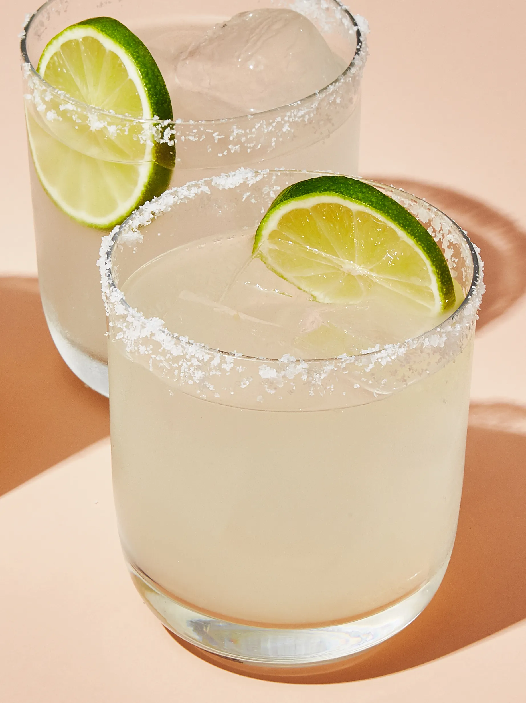

Guacamole is an avocado-based dip or spread that originated in Mexico. It's typically made with mashed avocado and lime juice, then seasoned with salt and cilantro. Guacamole often contains tomatoes and onions.
Ingredients
- 2 cups ice
- 2 fluid ounces silver tequila
- ¾ fluid ounce triple sec (orange-flavored liqueur)
- ¾ fluid ounce freshly squeezed lime juice
- 1 tablespoon coarse salt, or as needed
- 1 lime wedge
- 3 ounces citrus flavored kombucha, or your favorite flavor
Steps
- Fill a cocktail shaker half-full with ice. Add tequila, triple sec, and lime juice to the shaker. Seal and shake vigorously until outside is frosted, 10 to 15 seconds.
- Sprinkle salt onto a plate. Moisten the rim of a glass with the lime wedge. Press the moistened rim into the salt. Fill glass with ice.
- Strain margarita into the glass and top with kombucha. Stir gently and garnish with lime wedge, if desired.